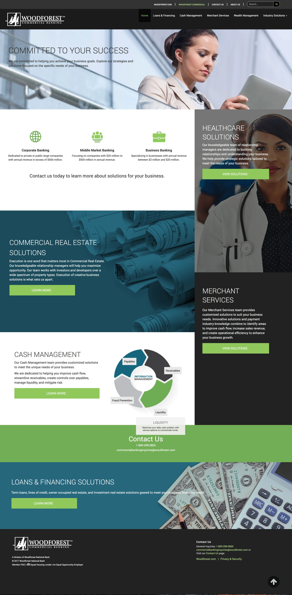
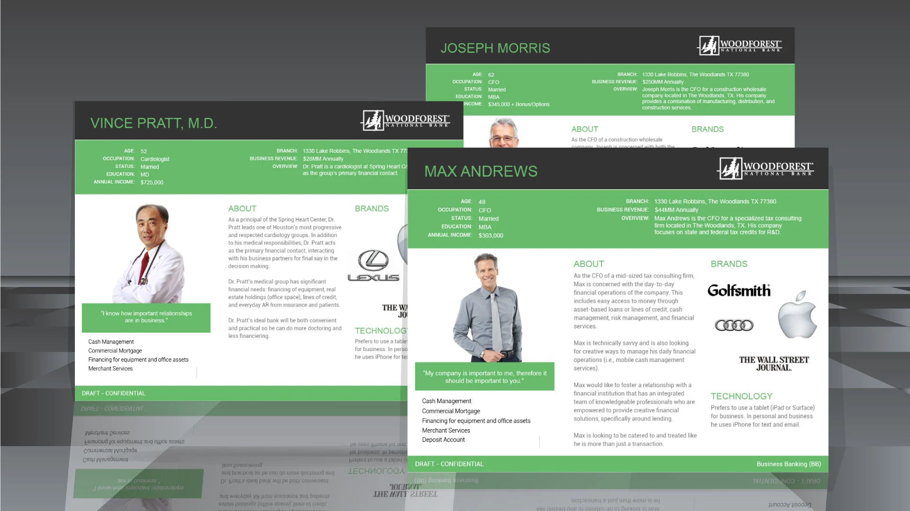
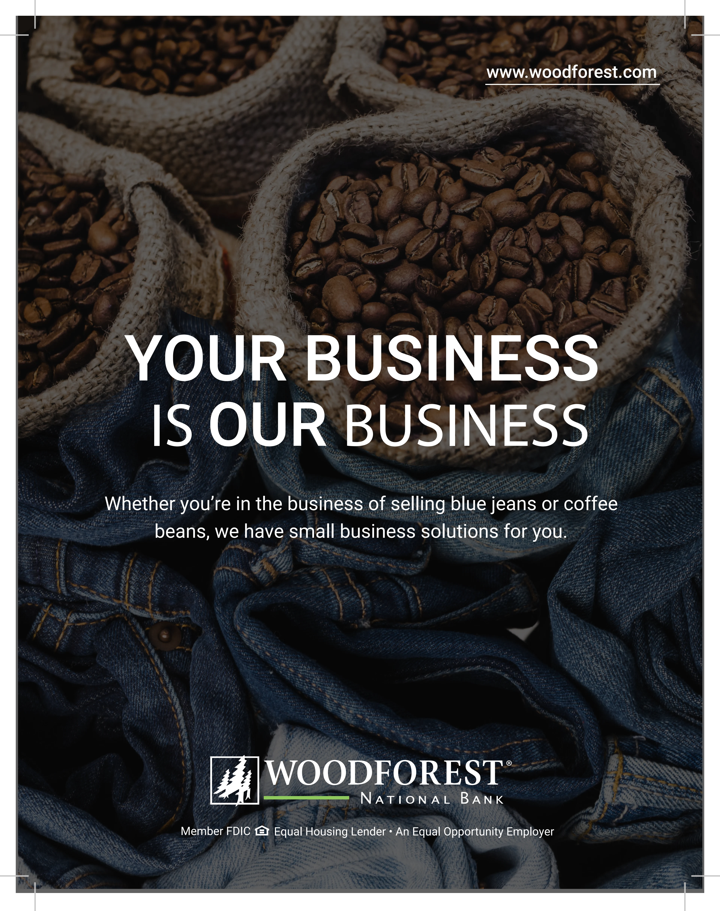

Case Study
Commercial Banking
Redesigning a commercial banking platform to support complex workflows, faster decision-making, and confident oversight for high-value accounts.
The challenge
Commercial banking customers manage multiple accounts, approvals, and transactions—often under time pressure and regulatory constraints. The existing experience made it difficult to quickly understand status, locate key actions, or move confidently through critical workflows.
Information was fragmented across screens, forcing users to hunt for context instead of acting on it. For power users, this friction compounded throughout the day.

Approach
We grounded the redesign in persona research, identifying distinct needs for operators, approvers, and decision-makers. Each role required a different balance of detail, speed, and oversight.
From there, we restructured the information architecture and streamlined workflows to support situational awareness first, then action—keeping users oriented as they moved through tasks.

Design highlights
The new experience emphasizes clarity at every level—from dashboard scanning to transaction execution—helping users move faster with confidence.

Outcome
The redesigned platform created a calmer, more efficient experience for commercial customers—reducing friction, improving clarity, and providing a strong foundation for future capabilities.